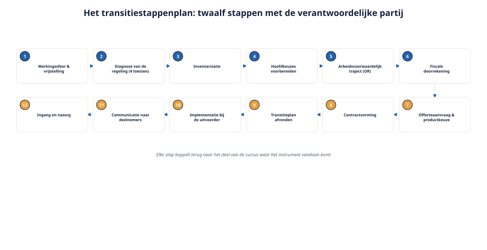

Deel 15 — Slidedeck
Transitie in verzekerde regelingen · Twee dagdelen · 44 slides
DAGDEEL A
Slide 1 — Titel
Deel 15: Transitie in verzekerde regelingen Het langst aangekondigde deel — twee dagdelen
Slide 2 — Alles komt hier samen
Docentnotitie: alle flappen van niveau 1 en 2 zichtbaar ophangen. Drieluik · driehoek · scheidslijnkaart · eerbiedigende werking · compensatie · waarborg
Slide 3 — Dagdeel A en B
A: het stappenplan zelf opbouwen B: volledig toepassen op Van Doorn Techniek
Slide 4 — De uiterste transitiedatum
1 januari 2028 Vanaf dan moet elke regeling Wtp-conform zijn
Slide 5 — De uiterste indieningsdatum
1 oktober 2027 Laatste moment om aan te leveren als je op 1-1-2028 wilt overgaan
Slide 6 — Ook de deadline voor eerbiedigende werking
1 oktober 2027 is de facto ook de uiterste datum om nog voor eerbiedigende werking te kiezen
Slide 7 — De omvang van de opgave
Tienduizenden uitvoeringsovereenkomsten moeten nog worden omgezet Tempo bij verzekeraars loopt achter — concentratie richting het einde
Slide 8 — Opdracht 15.1
“We hebben tot 2028, dus we kunnen nog wachten” Welke twee deadlines lopen hier door elkaar?
Slide 9 — Het patroon dat drie keer terugkwam
Deel 5 · deel 7 · deel 14: Contractuele deadlines liggen bijna altijd vóór de wettelijke
Slide 10 — Van Doorn specifiek
Niet 1 oktober 2027. Niet 1 januari 2028. 30 juni 2026 — de opzegtermijn
Slide 11 — Vijf hoofdkeuzes
- Karakter van de regeling
- Eerbiedigende werking, ja of nee
- Hoogte van de vlakke premie
- Solidair of flexibel
- Compensatie
Slide 12 — Het vaak vergeten zesde punt
Het nabestaandenpensioen Moet voor iedereen worden aangepast — ook onder overgangsrecht
Slide 13 — Opdracht 15.2
Middelloonregeling, 51 jaar gemiddeld Vul de zes punten in Docentnotitie: valkuil bij punt 2 — er ís niets te eerbiedigen.
Slide 14 — Het twaalfstappenplan

Van werkingssfeercontrole tot ingang en nazorg
Slide 15 — Stap 1 t/m 4
Werkingssfeer → diagnose → inventarisatie → hoofdkeuzes voorbereiden
Slide 16 — Stap 5 t/m 8
OR-traject → fiscale doorrekening → offerteaanvraag → contractvorming
Slide 17 — Stap 9 t/m 12
Transitieplan indienen → implementatie → communicatie → ingang en nazorg
Slide 18 — Opdracht 15.3
Zet zes activiteiten in de juiste volgorde Welke twee overlappen vrijwel altijd?
Slide 19 — De overlap die nooit weggaat
OR-traject en offertevoorbereiding lopen parallel Dezelfde spanning als in deel 2 — nu op trajectniveau
Slide 20 — Vijf complicaties
Gemengd bestand · meerdere cao’s · wijzigende omvang · dga-positie · late OR
Slide 21 — Opdracht 15.4
Vier scenario’s, welke complicatie speelt?
Slide 22 — Einde dagdeel A
Volgende sessie: alles toegepast op één dossier Van Doorn Techniek, van a tot z
DAGDEEL B
Slide 23 — Herstart
Dertig seconden: waar staat Van Doorn nu?
Slide 24 — Opdracht 15.5
Loop de twaalf stappen zelf na, zonder de reader 30-35 minuten, individueel
Slide 25 — Stap 1 — Van Doorn
Vrijgesteld van Bpf T&I · fonds gaat zelf over per 1-1-2027 → gelijkwaardigheid opnieuw toetsen
Slide 26 — Stap 2 — Van Doorn
Staffel 8,4-26,1% (soort B) + partnerpensioen opbouwbasis 70% (soort C) Twee aparte problemen
Slide 27 — Stap 4 — de check
Heb jij het zesde punt (nabestaandenpensioen) apart genoemd? Niet verstopt onder “premie”?
Slide 28 — Stap 7 — de check
Heb jij de waarborgvraag expliciet aan Karel gekoppeld? Niet alleen in algemene termen?
Slide 29 — Opdracht 15.6 — de rekensom compleet
Oud: € 6.919 · Nieuw zonder compensatie: € 4.324 Max. compensatie (3%): € 864,84
Slide 30 — Het resultaat
€ 4.324 + € 864,84 = € 5.188,84 Nog altijd € 1.730,16 lager dan zijn oude premie
Slide 31 — Zelfs bij het fiscale maximum
“Dit is geen compensatievoorstel, dit is een compensatiebedrag” — deel 7 Nu met de rekensom eronder
Slide 32 — Karel moet dit weten
Niet verhuld achter het woord “compensatie” Eerlijk voorgelegd — criterium 6 uit de capstone van deel 10
Slide 33 — Opdracht 15.7 — definitief advies
Route A of B · plus stap 1 · plus de rekensom · plus eerbiedigende werking Eén A4, 35 minuten
Slide 34 — Het spanningsveld
Karel gebaat bij eerbiediging Yasmin mogelijk beter af zonder — deel 6
Slide 35 — Vijf structurele fouten
- Wettelijke datum verward met eigen deadline
- Nabestaandenpensioen als bijzaak behandeld
- Waarborg niet bedongen
- Compensatiebedrag zonder onderbouwing
- OR te laat betrokken
Slide 36 — Opdracht 15.8
Vertaal elke fout naar een concrete misstap bij Van Doorn Met namen en data
Slide 37 — Fout 1, bij Van Doorn
Ferdi wacht tot eind 2027 → contract al stilzwijgend verlengd sinds 30 juni 2026
Slide 38 — Fout 3, bij Van Doorn
Overstap zonder waarborg → Karel individueel beoordeeld voor zijn AO-dekking
Slide 39 — Fout 5, bij Van Doorn
Ilse hoort het pas ná contractering met Meridiaan → de e-mail-fout uit deel 2, nu op trajectniveau
Slide 40 — Opdracht 15.9 — reflectie
Welk deel van de cursus was voor jou het lastigst te integreren? Acht zinnen, individueel inleveren
Slide 41 — Wat je vandaag hebt gedaan
Elf voorgaande delen, samengebracht op één dossier Dat is het hele vak, in het klein
Slide 42 — Bewaar je werk
Beslisnotitie (15.7) + reflectie (15.9) = directe basis voor de capstone in deel 21
Slide 43 — Doorkijk naar deel 16
De cirkel naar de fondsenwereld sluit zich Waardeoverdracht in volle breedte, en invaren bij pensioenfondsen